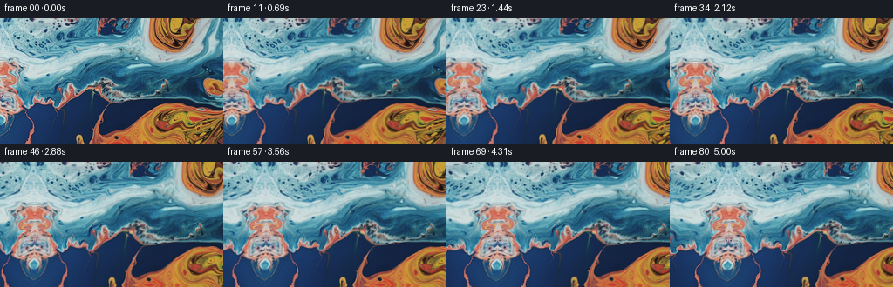
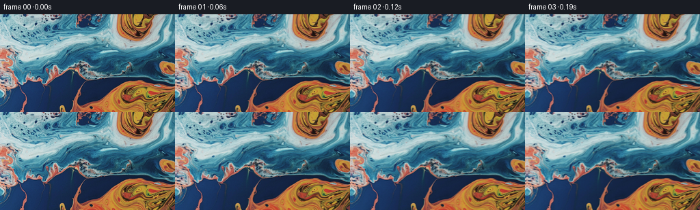

CODING AGENTS AS PIXEL WORLD MODELS
traex/GPT-5.6-Sol · 0001_s1
点击播放 · 原生 RGB 像素
逐轮保存的候选
回放视频、检查图与代码变化。
每份候选均可单独播放。实际图片检查记录在下方工具轨迹中。
候选 01播放与检查图
点击播放 · 原生 RGB 像素


展开代码变化
--- 上一保存版本
+++ 本次保存版本
@@ -0,0 +1,129 @@
+"""Generate a gentle leftward camera pan over the supplied liquid close-up.
+
+The only visual source is first_frame.png. The material just outside its left
+edge is continued by a smoothly warped reflection, then the camera samples a
+steadily left-moving window. A very small, low-frequency coordinate warp
+keeps the two liquids feeling fluid without changing their appearance.
+"""
+from pathlib import Path
+import json
+
+import numpy as np
+from PIL import Image
+
+import artifact_io
+
+
+ROOT = Path(__file__).resolve().parent
+
+
+def reflect_coordinate(v: np.ndarray, high: float) -> np.ndarray:
+ """Reflect arbitrary coordinates into [0, high]."""
+ period = 2.0 * high
+ z = np.mod(v, period)
+ return np.where(z <= high, z, period - z)
+
+
+def bilinear_rgb(image: np.ndarray, x: np.ndarray, y: np.ndarray) -> np.ndarray:
+ """Bilinear RGB sampling with reflected image boundaries."""
+ h, w, _ = image.shape
+ x = reflect_coordinate(x, float(w - 1))
+ y = reflect_coordinate(y, float(h - 1))
+ x0 = np.floor(x).astype(np.int32)
+ y0 = np.floor(y).astype(np.int32)
+ x1 = np.minimum(x0 + 1, w - 1)
+ y1 = np.minimum(y0 + 1, h - 1)
+ fx = (x - x0)[..., None]
+ fy = (y - y0)[..., None]
+ a = image[y0, x0]
+ b = image[y0, x1]
+ c = image[y1, x0]
+ d = image[y1, x1]
+ return (a * (1.0 - fx) + b * fx) * (1.0 - fy) + (c * (1.0 - fx) + d * fx) * fy
+
+
+def sample_world(source: np.ndarray, wx: np.ndarray, wy: np.ndarray) -> np.ndarray:
+ """Sample an extended world texture whose [0,255] region is the source.
+
+ Reflection about the original left edge produces a C0-continuous, organic
+ continuation. Its increasing vertical bend avoids looking like a rigid
+ mirror once newly revealed material gets farther from the boundary.
+ """
+ width = source.shape[1]
+ sx = wx.copy()
+ sy = wy.copy()
+
+ left = wx < 0.0
+ if np.any(left):
+ distance = -wx
+ # Exactly zero displacement at the join, with broad liquid-like bends.
+ bend_x = 1.0 + 0.040 * np.sin(wy * 0.044 + distance * 0.061)
+ left_x = distance * bend_x
+ left_y = wy + (distance / 70.0) * (
+ 5.4 * np.sin(wy * 0.043 + 0.65)
+ + 2.5 * np.sin(distance * 0.079 - wy * 0.024)
+ )
+ sx = np.where(left, left_x, sx)
+ sy = np.where(left, left_y, sy)
+
+ # Only a fraction of a pixel can be requested beyond the right edge by the
+ # subtle fluid warp. Continue that side smoothly as well.
+ right = wx > float(width - 1)
+ if np.any(right):
+ d = wx - float(width - 1)
+ sx = np.where(right, float(width - 1) - d, sx)
+ sy = np.where(right, wy + 0.15 * d * np.sin(wy * 0.05), sy)
+
+ return bilinear_rgb(source, sx, sy)
+
+
+def generate() -> np.ndarray:
+ spec = json.loads((ROOT / "task_spec.json").read_text())
+ count = int(spec["frames"])
+ height = int(spec["height"])
+ width = int(spec["width"])
+ fps = float(spec["fps"])
+
+ first_u8 = np.asarray(Image.open(ROOT / "first_frame.png").convert("RGB"), dtype=np.uint8)
+ if first_u8.shape != (height, width, 3):
+ raise ValueError(f"Unexpected first-frame shape: {first_u8.shape}")
+ source = first_u8.astype(np.float32)
+
+ yy, xx = np.mgrid[0:height, 0:width].astype(np.float32)
+ frames = np.empty((count, height, width, 3), dtype=np.uint8)
+ frames[0] = first_u8 # contractual pixel-identical first frame
+
+ # 66 pixels in 5 seconds: a clear but unhurried leftward camera pan.
+ total_pan = 66.0
+ duration_steps = float(count - 1)
+ for i in range(1, count):
+ u = i / duration_steps
+ seconds = i / fps
+ pan = total_pan * u
+
+ # The camera moving left makes all world features drift to screen-right.
+ # Low-amplitude evolving warps add fluid life while preserving the pan.
+ dx = (
+ 0.72 * (np.sin(0.030 * yy + 0.62 * seconds) - np.sin(0.030 * yy))
+ + 0.34 * (np.sin(0.024 * xx - 0.39 * seconds) - np.sin(0.024 * xx))
+ )
+ dy = (
+ 1.02 * (np.sin(0.024 * xx - 0.46 * seconds) - np.sin(0.024 * xx))
+ + 0.46 * (
+ np.sin(0.048 * yy + 0.027 * xx + 0.32 * seconds)
+ - np.sin(0.048 * yy + 0.027 * xx)
+ )
+ )
+ # A subpixel stabilization drift prevents an unnaturally perfect scan,
+ # but remains far smaller than the horizontal pan.
+ camera_y = 0.36 * np.sin(np.pi * u)
+ world_x = xx - pan + dx
+ world_y = yy + dy + camera_y
+ rgb = sample_world(source, world_x, world_y)
+ frames[i] = np.clip(np.rint(rgb), 0, 255).astype(np.uint8)
+
+ return frames
+
+
+if __name__ == "__main__":
+ artifact_io.save(generate(), ROOT)
可观测工具轨迹
实际执行的命令与返回图片。
命令 1exit 0
/bin/bash -lc "cat GENERATION_RULES.md && printf '\\n--- PROMPT ---\\n' && cat prompt.txt"
命令 2exit 0
/bin/bash -lc "find . -maxdepth 2 -type f -printf '%p\\n' | sort && printf '\\n--- tools ---\\n' && command -v ffmpeg || true && command -v python3 || true"
命令 3exit 0
/bin/bash -lc "cat task_spec.json && sed -n '1,240p' artifact_io.py"
命令 4exit 0
/bin/bash -lc "python3 - <<'PY'
from PIL import Image
import numpy as np
im=np.array(Image.open('first_frame.png').convert('RGB'))
print(im.shape,im.dtype,im.min(),im.max())
for name,a in [('all',im),('left',im[:,:64]),('mid',im[:,96:160]),('right',im[:,192:]),('top',im[:36]),('bottom',im[108:])]:
print(name,'mean',a.mean((0,1)).round(1),'std',a.std((0,1)).round(1),'p10',np.percentile(a,10,(0,1)).round(0),'p90',np.percentile(a,90,(0,1)).round(0))
# hue rough categories and block dominant RGB means
mx=im.max(2); mn=im.min(2)
blue=(im[:,:,2]>im[:,:,0]*1.12)&(im[:,:,2]>im[:,:,1]*1.03)&(im[:,:,2]-im[:,:,0]>15)
orange=(im[:,:,0]>im[:,:,2]*1.2)&(im[:,:,0]>im[:,:,1]*1.05)&(im[:,:,0]-im[:,:,2]>30)
print('blue',blue.mean(),'orange',orange.mean())
for y in range(0,144,12):
s=''
for x in range(0,256,8):
b=blue[y:y+12,x:x+8].mean(); o=orange[y:y+12,x:x+8].mean(); v=im[y:y+12,x:x+8].mean()/255
s += 'B' if b>.55 else ('b' if b>.2 else ('O' if o>.55 else ('o' if o>.2 else ('+' if v>.6 else ('.' if v>.3 else ' ')))))
print(s)
PY"命令 5exit 0
/bin/bash -lc "cat > generate.py <<'PY'
\"\"\"Generate a gentle leftward camera pan over the supplied liquid close-up.
The only visual source is first_frame.png. The material just outside its left
edge is continued by a smoothly warped reflection, then the camera samples a
steadily left-moving window. A very small, low-frequency coordinate warp
keeps the two liquids feeling fluid without changing their appearance.
\"\"\"
from pathlib import Path
import json
import numpy as np
from PIL import Image
import artifact_io
ROOT = Path(__file__).resolve().parent
def reflect_coordinate(v: np.ndarray, high: float) -> np.ndarray:
\"\"\"Reflect arbitrary coordinates into [0, high].\"\"\"
period = 2.0 * high
z = np.mod(v, period)
return np.where(z <= high, z, period - z)
def bilinear_rgb(image: np.ndarray, x: np.ndarray, y: np.ndarray) -> np.ndarray:
\"\"\"Bilinear RGB sampling with reflected image boundaries.\"\"\"
h, w, _ = image.shape
x = reflect_coordinate(x, float(w - 1))
y = reflect_coordinate(y, float(h - 1))
x0 = np.floor(x).astype(np.int32)
y0 = np.floor(y).astype(np.int32)
x1 = np.minimum(x0 + 1, w - 1)
y1 = np.minimum(y0 + 1, h - 1)
fx = (x - x0)[..., None]
fy = (y - y0)[..., None]
a = image[y0, x0]
b = image[y0, x1]
c = image[y1, x0]
d = image[y1, x1]
return (a * (1.0 - fx) + b * fx) * (1.0 - fy) + (c * (1.0 - fx) + d * fx) * fy
def sample_world(source: np.ndarray, wx: np.ndarray, wy: np.ndarray) -> np.ndarray:
\"\"\"Sample an extended world texture whose [0,255] region is the source.
Reflection about the original left edge produces a C0-continuous, organic
continuation. Its increasing vertical bend avoids looking like a rigid
mirror once newly revealed material gets farther from the boundary.
\"\"\"
width = source.shape[1]
sx = wx.copy()
sy = wy.copy()
left = wx < 0.0
if np.any(left):
distance = -wx
# Exactly zero displacement at the join, with broad liquid-like bends.
bend_x = 1.0 + 0.040 * np.sin(wy * 0.044 + distance * 0.061)
left_x = distance * bend_x
left_y = wy + (distance / 70.0) * (
5.4 * np.sin(wy * 0.043 + 0.65)
+ 2.5 * np.sin(distance * 0.079 - wy * 0.024)
)
sx = np.where(left, left_x, sx)
sy = np.where(left, left_y, sy)
# Only a fraction of a pixel can be requested beyond the right edge by the
# subtle fluid warp. Continue that side smoothly as well.
right = wx > float(width - 1)
if np.any(right):
d = wx - float(width - 1)
sx = np.where(right, float(width - 1) - d, sx)
sy = np.where(right, wy + 0.15 * d * np.sin(wy * 0.05), sy)
return bilinear_rgb(source, sx, sy)
def generate() -> np.ndarray:
spec = json.loads((ROOT / \"task_spec.json\").read_text())
count = int(spec[\"frames\"])
height = int(spec[\"height\"])
width = int(spec[\"width\"])
fps = float(spec[\"fps\"])
first_u8 = np.asarray(Image.open(ROOT / \"first_frame.png\").convert(\"RGB\"), dtype=np.uint8)
if first_u8.shape "'!= (height, width, 3):
raise ValueError(f"Unexpected first-frame shape: {first_u8.shape}")
source = first_u8.astype(np.float32)
yy, xx = np.mgrid[0:height, 0:width].astype(np.float32)
frames = np.empty((count, height, width, 3), dtype=np.uint8)
frames[0] = first_u8 # contractual pixel-identical first frame
# 66 pixels in 5 seconds: a clear but unhurried leftward camera pan.
total_pan = 66.0
duration_steps = float(count - 1)
for i in range(1, count):
u = i / duration_steps
seconds = i / fps
pan = total_pan * u
# The camera moving left makes all world features drift to screen-right.
# Low-amplitude evolving warps add fluid life while preserving the pan.
dx = (
0.72 * (np.sin(0.030 * yy + 0.62 * seconds) - np.sin(0.030 * yy))
+ 0.34 * (np.sin(0.024 * xx - 0.39 * seconds) - np.sin(0.024 * xx))
)
dy = (
1.02 * (np.sin(0.024 * xx - 0.46 * seconds) - np.sin(0.024 * xx))
+ 0.46 * (
np.sin(0.048 * yy + 0.027 * xx + 0.32 * seconds)
- np.sin(0.048 * yy + 0.027 * xx)
)
)
# A subpixel stabilization drift prevents an unnaturally perfect scan,
# but remains far smaller than the horizontal pan.
camera_y = 0.36 * np.sin(np.pi * u)
world_x = xx - pan + dx
world_y = yy + dy + camera_y
rgb = sample_world(source, world_x, world_y)
frames[i] = np.clip(np.rint(rgb), 0, 255).astype(np.uint8)
return frames
if __name__ == "__main__":
artifact_io.save(generate(), ROOT)
PY
python3 generate.py
python3 - <<'"'PY'
from PIL import Image
import numpy as np
from pathlib import Path
f=np.stack([np.asarray(Image.open(p).convert('RGB')) for p in sorted(Path('frames').glob('*.png'))])
orig=np.asarray(Image.open('first_frame.png').convert('RGB'))
print('frames', f.shape, f.dtype, 'first_equal', np.array_equal(f[0],orig))
print('mean abs consecutive:', np.abs(f[1:].astype(float)-f[:-1]).mean((1,2,3)).round(3))
# Correlation error after compensating nearest integer rightward drift per frame.
for idx in [1,10,20,40,60,80]:
shift=round(66*idx/80)
# overlap comparison to source: output x=shift... samples source x=0...
a=f[idx,:,shift:]
b=orig[:,:256-shift]
print(idx,'shift',shift,'overlap MAD',np.abs(a.astype(float)-b.astype(float)).mean().round(2),'meanRGB',f[idx].mean((0,1)).round(1))
PY"命令 6exit 0
/bin/bash -lc "python3 -m py_compile generate.py && python3 - <<'PY'
import numpy as np
from pathlib import Path
z=np.load('pixels.npz')['pixels']
print('pixels.npz:', z.shape, z.dtype, 'range', int(z.min()), int(z.max()))
print('outputs:', {p.name:p.stat().st_size for p in [Path('pixels.npz'),Path('index.html'),Path('inspection.png'),Path('transition_check.png')]})
PY"保存候选 1 份；完成命令 6 次；可验证图片返回 0 张。原始 API 响应与完整日志保留在本地。